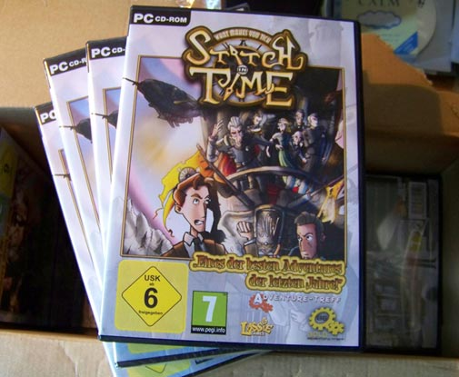

Full Talkie Series
Check 1, 2... is this thing on?
March 31st, 2021
We're back! After a hiatus in which our game executables fell to the obsolescence of time and we lost our website domain, we've rallied to restore the legacy of the Tick games. What's new? Lots of good stuff: new game executables that will run on modern systems; a reconstruction of the old websites; and an HTML5 port of the fishing game that will run natively within modern browsers.
We're thrilled to have the games updated and running on modern systems, and are pleased to again offer these updated versions as free downloads. As for us: Matt is working as a freelance writer doing some work on games, and Greg is coding international payments at Shopify.
Pillars of the Earth preview
December 5th, 2015
Matt and his team at Daedalic are hard at work on building out Ken Follett’s “Pillars of the Earth” as a full-scale graphic adventure. If you haven’t seen it yet, be sure to check out the preview trailer that their studio is now promoting!
Cabaret Noir, by Happenstance Theater
November 1st, 2015
Happenstance Theater, the voice cast behind Tick and many characters in Stitch, are at it again with a new show called Cabaret Noir. The show is an original production featuring a series of dark comedic sketches in the motif of classic film noir, and plays at The Baltimore Theater Project (Baltimore, MD) through mid-November. The show is fabulous, and includes an ironic cameo…

Alex Vernon (voice of Nathan) has a running character part costumed in a brown tweed suit with a collar tie tucked into his waistcoat. He looks (and sounds) a whole lot like Nathan! He even sports a pocket flip-lighter to ignite the dames’ cigarettes. While the costume panned out through total coincidence, Alex noted that the caricature similarities are ironic.
Pictured above is Alex Vernon (voice of Nathan), with Sarah Olmsted Thomas (voice of Nora) in Happenstance Theater’s original production, Cabaret Noir.
Series Release
July 14th, 2015

Folks, it’s the end of an era. Since the original 2007 release of What Makes You Tick?, these games have been an ongoing adventure for Matt and I. From evolutions in technology, to new language translations, to full blown voice casts; the Tick games have remained close to our hearts, and their characters our dear friends. Each new evolution of these games has brought something wonderful, and we’re thrilled to conclude with the ultimate realization of these characters, as brought to life by our wonderful vocal cast. Also coming full-circle back to Matt’s original 2007 freeware release, we’re proud to be sunsetting these games to where they belong: into the hands of our fans, as indie freeware downloads (mind the hodge-podge of free download hosting providers that we’re linking to!).
But most importantly, we’ve made some great friends and gone some great places along this journey. To all of our friends and fans: we thank you for joining us on the ride. What’s next? Well, we’re just a couple of guys pursuing our lives and careers, which is of course a full-time adventure. So is this the end for Nathan, Nigel, and the world of What Makes You Tick? Possibly, but then time also works in funny ways… who can really say when the clockwork stops ticking?
Dr. Pepper
June 21st, 2015
Tick fans, this you’ve got to see:
Look familiar? While it could certainly be a coincidence, the parallel is uncanny. Way to go, Matt! You either inspired a marketing campaign, or else beat an agency to the concept by seven years.
The “What Makes You Tick?” Series
June 8th, 2015
Huge news: after a full year of casting, recording, and editing over six-thousand lines of dialog from twenty-five performers, the Stitch talkie is finished. The last of the pickups are being polished now, and the build is in a closed beta. It was a haul, but it sounds great!
Now to address a long-standing FAQ: how will the Stitch talkie be released? Answer: the talkie versions of “What Makes You Tick?” and “A Stitch in Time” will be bundled together, and released for download as freeware. Freeware, as in… FREE.
After some discussion, Matt and I decided this was the most sensible course of action. It’s pretty clear at this point that Stitch production costs will not break even – and that’s okay, because we had a good time building it and we’ve made some great friends along the way. The game certainly helped launch Matt’s career into Daedalic Entertainment, and laid some groundwork for material that later evolved into “Night of the Rabbit”. Great things came from the project, even if financial success was not one of them. Now, as old Flash games drift into the sunset of their era, our biggest return on investment is simply to put these games into the hands of our fans… and what better way to do that than to return to the roots of WMYT’s 2007 freeware debut.
Stitch Talkie Update
April 12th, 2015
It’s been a while since the Stitch talkie announcement, so we owe you all an update. Let’s cover all the bases…
Matt is busy working at Daedalic Entertainment, and we can now publicly say that his current project is a Ken Follett game. Matt has met with the renowned author, and is building an exciting new adventure based on one of his works.
I (Greg) have been busy working at Vox Media on features across all publications, including Polygon, The Verge, and our newcomer Vox. I’ve also been teaching a night course for the past quarter which has taken up a lot of time.
The Stitch talkie is about 95% complete. It’s been a HUGE recording effort for an indie production: 6100 lines of dialog from 37 characters, all of which needs to be recorded, edited, and then mastered into the game. Overall, we’re really happy with the sound of it! Good news: all original cast members from the Tick talkie have returned to their respective roles. Between Alex (Nathan), Sarah (Nora), and now Travis (Nigel), the lead roles are quite strong. I think we’ve now finally found a Lionstone, which was the last major uncast part.
A Stitch In Time, the Talkie
November 17th, 2014
Who’s this guy? He looks kind of like Nigel Trelawney. He sounds like Nigel too…

Introducing Travis Vander Hoop, the voice of Nigel Trelawney in the “What Makes You Tick: A Stitch in Time” talkie. After many months of quietly recording audio, we can say with some certainly that the game will be ready for release in early 2015. Stay tuned!
What Makes You Tick?, The Talkie
April 2nd, 2014
Announcing: What Makes You Tick?, The Talkie. After eight years of silent subtitles, the Tick characters are finally coming to life with an audio drama performed by the fabulous Happenstance Theater company! It sounds great, and we’re really excited to share it with our friends and fans. The talkie is currently in beta, and should be released in the coming month. Stay tuned!!

Unfortunately we still have no plans to record a talkie for the sequel, “A Stitch in Time”. Stitch is about 10x the size of the original WMYT game, so would be a formidable undertaking as a hobby recording project. However… never say never, right?
German hard copies!
June 3rd, 2011
Straight from our publisher: we’ve just received the first hard copies of the German version of “What Makes You Tick: A Stitch in Time” on CD-Rom! So, the German version is ready and should be available very soon.

Gold Award at Adventure-Treff
February 11th, 2011
The German adventure website Adventure-Treff just posted their review of What Makes You Tick: A Stitch in Time. The game was graded at 86%, earning it their gold award! We are honored by their assessment and recognition.
Released!
September 9th, 2010
After two years of development, What Makes You Tick: A Stitch in Time is finally available. A whopping big thanks goes out to our families, friends, and fans who have supported us in this undertaking. Enjoy!